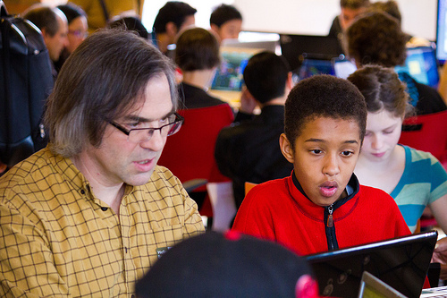

Why Not to Use Python

When we started Software Carpentry back in the late 1990s, we used Perl as a teaching language instead of Python. At the time, it was a no-brainer: Perl had many more users, better documentation, and more libraries. We switched because we found ourselves explaining the same inconsistencies over and over again (as I've said many times since, every page of the O'Reilly Pocket Guide to Perl used one of the words "except", "unless", or "however" at least once). Python had fewer "buts": we saw right away that students were learning concepts more quickly, and they seemed to retain more as well.
But Python isn't perfect, and I was reminded very forcefully of its biggest flaw on Saturday, when I spent half a day teaching kids aged 8-14 how to program as part of a Mozilla Hack Jam in Toronto. About three quarters of the kids were able to start drawing pictures with Python's turtle graphics library right away. The other quarter, though, stumbled (and were sometimes blocked completely) by the same old installation headaches that plague grownups trying to use Python to do science.
One would-be learner showed up with a brand-new MacBook Air running OS X 10.7. Half an hour and four downloads later, he still couldn't get a turtle to draw a straight line. We tried 32 and 64-bit DMGs for Python 2.7.2 and Python 3.2.2, without luck; the only advice Google found for us started, "Install the latest version of XCode…", at which point we gave up. Several others, who had Windows 7 machines, were able to install, but then we discovered that Python still doesn't put itself on the search PATH. "Oh," said one of my helpers, "That's easy, you just go into System… then Advanced… then edit this environment variable…" It's a good thing he was looking at the computer as he said this, instead of at the faces of the kids he was trying to help–if he'd been doing the latter, he would have realized how inappropriate "simple" and "just" were.
People used to talk about "grand challenges" in scientific computing. Mostly, they meant the kind of big science that shows up on magazine covers. For me, though, the only "grand challenge" in scientific computing that matters is making stuff work the first time for everyone. It might not be as sexy as protein folding, global climate change, or predictive models of fender crumpling, but it would help a lot more people–and not just scientists.
Later: another stumbling block when doing things with turtle graphics is Python's "counted loop" idiom:
for i in range(3): do something
If I want people to draw squares, hexagons, and what-not, I either wave my hands ("Trust me, this is just what you do") or explain functions and lists when what I really want to do is explain loops. It's not as big a thing as the installation headaches, but first-class ranges:
for i in [0:3]: do something
would make things noticeably easier in this one particular case. Is it important enough to merit changing the language? Probably not on its own, but if there are other reasons to do it–or to go all out and add a cross-product operator:
for (i, j) in [0:3] @ [0:5]: do something 15
As a bonus, we could then overload @ for matrix multiplication :-)